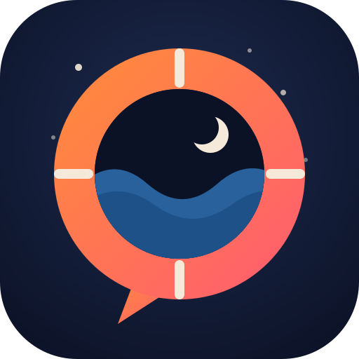

QuitSponsor
An AI sponsor for quitting smoking. Always awake, never judging, remembers your journey.
Quitting is not a fight you win, it is a match you stop attending. A sponsor does not coach the boxing, it walks you out of the arena. The guiding idea behind the protocol.Talk to the sponsor on Telegram Read the open protocol
Free private beta, 20 seats, adults only. Seven languages. Your data: export or delete it anytime, for real.
What it is
A protocol, not a prompt
An explicit, auditable procedure for the moments that decide a quit: the 2 a.m. craving, the pack already in hand, the slip, the silence. Every claim traced to published research; the provenance of every rule labeled.
A witness with long memory
The sponsor keeps your logbook (encrypted at rest), knows your contract and your risk map, and is on call at the hours human support is not. Zero shame: slips are data, nothing banked is ever lost.
Open end to end
The protocol, the bot, the ethics charter that binds the operators, the safety rules, and the evaluation are all public and MIT-licensed.
Measured, not assumed
The protocol ships with a reproducible six-turn crisis test, scored across seven LLMs from five vendors, with and without it. Without the protocol, every vendor's model reproduced known counseling errors.
| Model | With protocol | Bare |
|---|---|---|
| Claude Opus / Sonnet 5 | 16 / 16 | 11.5 / 10.5 |
| GLM-5-turbo | 16 | 13 |
| GPT-5.6 Sol | 15.5 | 9.5 |
| DeepSeek V4 Pro / Grok 4.20 | 14 | 11 / 8 |
Method, rubric, disqualifiers and limits: MODEL_FIT.md. One run per cell, graded by the author; treat as strong signal, not certification.
The honest part
- Not a medical device, not an emergency service. In a crisis, call your local emergency number or findahelpline.com — never wait on a bot.
- Not a panacea. Professional support plus medication holds the strongest evidence. If you have access to it, take it; the sponsor works alongside, as the continuity layer.
- Strict scope. Tobacco and cannabis co-use only. Alcohol and opioid dependence get one answer: a clinician — on those paths, a slip can kill.
- No outcome promises. Most quit attempts fail; evidence-based support improves the odds, and we publish the evidence.
Who made this
Built by metrox during the first week of his own quit, with the lessons of two recoveries and an AI pair who never sleeps. The field test started at N=1: the author. It held at the worst moment it was built for.